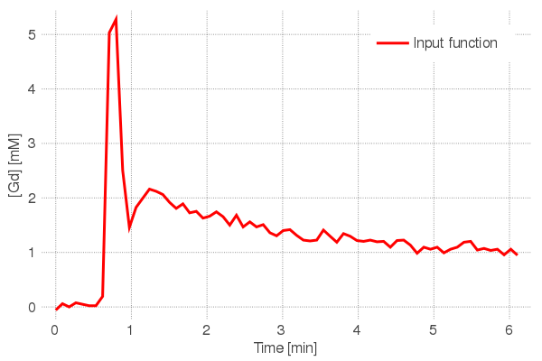
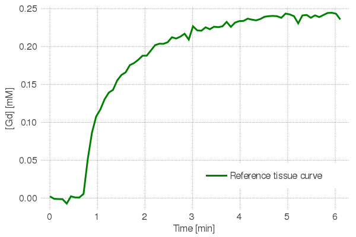
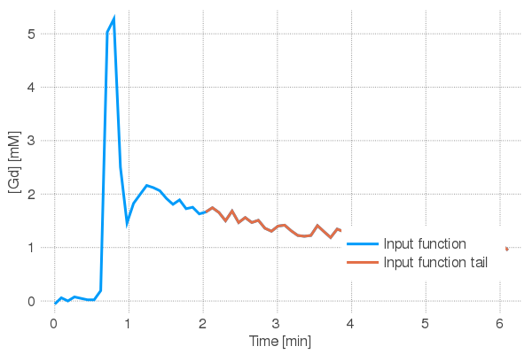

In-vivo analysis on glioblastoma multiforme (GBM)
This section will apply the reference region and input function tail (RRIFT) method on the in-vivo data. The Tofts model will also be fitted.
Downloading the pre-processed data
For simplicity, we will use data that has already been pre-processed and which can be downloaded by:
mat_dir = "./data/tcga-gbm-mat"
download_invivo_preprocessed(destination = mat_dir)
mat_files = joinpath.(mat_dir, readdir(mat_dir))8-element Array{String,1}:
"./data/tcga-gbm-mat/1.3.6.1.4.1.14519.5.2.1.4591.4001.100057969162276274933613772317.mat"
"./data/tcga-gbm-mat/1.3.6.1.4.1.14519.5.2.1.4591.4001.269887096484012292940330991126.mat"
"./data/tcga-gbm-mat/1.3.6.1.4.1.14519.5.2.1.4591.4001.278082550121070125285213632206.mat"
"./data/tcga-gbm-mat/1.3.6.1.4.1.14519.5.2.1.4591.4001.304604545029494418165835320551.mat"
"./data/tcga-gbm-mat/1.3.6.1.4.1.14519.5.2.1.4591.4001.335353575986269052491315637674.mat"
"./data/tcga-gbm-mat/1.3.6.1.4.1.14519.5.2.1.4591.4001.365805576275232517344053939830.mat"
"./data/tcga-gbm-mat/1.3.6.1.4.1.14519.5.2.1.4591.4001.763554173270318063812534542847.mat"
"./data/tcga-gbm-mat/1.3.6.1.4.1.14519.5.2.1.4591.4001.961791689281776173751323306588.mat"Single patient example
The next few sections will fit the extended Tofts model and the RRIFT method on a single DCE-MRI study.
chosen_mat_file = mat_files[7]
mat_data = load_preprocessed_mat(chosen_mat_file)
@extract (t, ct, crr, cp, masks) mat_data
println("""
Loaded the following variables:
- `t` is an $(typeof(t)) with length $(length(t))
- `ct` is an $(typeof(ct)) with size $(size(ct))
- `crr` is an $(typeof(crr)) with length $(length(crr))
- `cp` is an $(typeof(cp)) with length $(length(cp))
- `masks` is a $(typeof(masks)) with keys $(keys(masks))
""")Loaded the following variables:
- `t` is an Array{Float64,1} with length 70
- `ct` is an Array{Float64,2} with size (15982, 70)
- `crr` is an Array{Float64,1} with length 70
- `cp` is an Array{Float64,1} with length 70
- `masks` is a Dict{String,Any} with keys ["muscle", "tumour", "aif"]Extended Tofts model fit
The extended Tofts model has the form $ Ct(t) = K^{trans} \cdot Cp(t) \ast \exp(-k{ep} \cdot t) + vp \cdot Cp(t) $ where Ct$ is the concentration in tissue, $C_p$ is the input function, and $t$ is the time, i.e. ct, cp and, t in the code, respectively. The $\ast$ is a convolution while the fitting parameters are $K^{trans}$, $k_{ep}$, and $v_p$, along with a derived parameter $v_e = K^{trans} / k_{ep}$ (not shown in equation).
The input function along with concentration-time data for a single voxel are shown below:
plot(t, cp; lineopts("Input function")..., c = :red, legend = :topright)
The concentration-time data in a single tumour voxel is shown below:
single_ct = ct[100, :]
scatter(t, single_ct; lineopts("Concentration-time data in a tumour voxel")...)Fitting the extended tofts model to the single-voxel curve results in:
est_tofts = fit_model(:extendedtofts, :lls, ct = single_ct, t = t, cp = cp).estimates
fitted_curve = model_tofts(t = t, cp = cp,
parameters = (kt = est_tofts.kt[1], kep = est_tofts.kep[1], vp = est_tofts.vp[1]))
scatter(t, single_ct; lineopts("Measured curve in single voxel")...)
plot!(t, fitted_curve; title = "Extended Tofts model fit", lineopts("Extended Tofts model fit")...)where the fitting parameters are:
julia> est_tofts
(kt = [0.08883412510741831], kep = [1.0327259084518505], vp = [0.038510892935098386], ve = [0.086019072805667])Extended reference region model
One of the issues with the Tofts model is that it require knowledge of the input function cp. The input function has a sharp initial peak and a fast temporal resolution is needed to accurately measure it. This requires sacrificing SNR, spatial resolution, and volume coverage, all of which are precious.
An alternative is the reference region model which uses a healthy reference tissue crr as a surrogate for cp. The reference tissue curve is:
plot(t, crr; lineopts("Reference tissue curve")..., c=:green)
Fitting the extended reference region model to the single voxel results in:
julia> est_errm = fit_errm(t = t, ct = single_ct, crr = crr)
(rel_kt = [1.0120112732105304], rel_ve = [-0.11917800561962306], rel_vp = [0.5360991512455678], kep = [0.12263746137670792], kep_rr = [-0.014442218627429337])The extended reference region model provides estimates for: $K^{trans}/K^{trans}_{RR}$, $v_e/v_{e,RR}$, $v_p/K^{trans}_{RR}$, $k_{ep}$, and $k_{ep,RR}$. These are rel_kt, rel_ve, rel_vp, kep and kep_rr in the code, respectively. The parameters with the $RR$ subscript represent the reference tissue. In order to get $K^{trans}$, $v_e$, and $v_p$, we need to know the reference tissue's $K^{trans}_{RR}$ and $v_{e,RR}$.
Let's first look at the bright side: the reference region model provides en estimate for $k_{ep}$ without needing an input function. Unfortunately, this value does not agree with the estimate we got earlier from the Tofts model:
println("""
kep estimated with:
- Tofts model: $(est_tofts.kep[1])
- Ref.Region model: $(est_errm.kep[1])
""")kep estimated with:
- Tofts model: 1.0327259084518505
- Ref.Region model: 0.12263746137670792Well, let's look at the other bright side: the reference region model provides an estimate for $k_{ep,RR}$. Each fit on a tumour voxel produces an estimate for $k_{ep,RR}$. In theory, all fits should estimate the same $k_{ep,RR}$ because this parameter described the reference tissue and all fits use the same reference tissue curve. In practice, the estimated value varies due to noise and other fitting artifacts—for example, the voxel's estimated $k_{ep,RR}$ is -0.01 which is unphysical. However, most of the fits should be centered around the same value.
# Fit all tumour voxels with the extended reference region model
est_errm_allvoxels = fit_errm(t=t, ct=ct, crr=crr)
# Plot a histogram of the kep_rr estimates
histogram(est_errm_allvoxels.kep_rr[0 .< est_errm_allvoxels.kep_rr .< 2], bins=100, linealpha=0;
lineopts("Estimated kep_rr")..., xlabel="Estimate kep_rr [1/min]", ylabel="Counts")There is a peak in the histogram close to 0.3~0.4. We can estimate a single $k_{ep,RR}$ value by considering only the fits with positive estimates and then taking the interquartile mean of $k_{ep,RR}$ from those fits.
positive_mask = positive_only_mask(est_errm_allvoxels)
est_kep_rr = interquartile_mean(est_errm_allvoxels.kep_rr[positive_mask])
println("Estimated kep_rr: $est_kep_rr")Now that we have a single estimate for kep_rr, we can re-fit the reference region model but this time we force the fits to have the same kep_rr value. This two-fit approach is called the constrained extended reference region model, and it leads to better agreement with the Tofts fit:
# Refit using a fixed kep_rr
est_cerrm = fit_cerrm(t = t, ct = single_ct, crr = crr, kep_rr = est_kep_rr)
println("""
kep estimated with:
- Tofts model: $(est_tofts.kep[1])
- Constrained Ref.Region model: $(est_cerrm.kep[1])
""")Reference region and input function tail (RRIFT) method
Let's return our attention to the fact that the reference region model gives us relative parameters. In order to get absolute parameters, we need to know the reference tissue parameters: $K^{trans}_{RR}$ and $v_{e,RR}$. This is typically done by using literature-based values of muscle, but $K^{trans}_{RR}$ varies substantially between patients and between muscles.
The paper proposes RRIFT which takes advantages of two features:
- We know $k_{ep,RR}$ already. This is useful because $k_{ep,RR} = K^{trans}_{RR}/v_{e,RR}$, so we only need to know either $K^{trans}_{RR}$ or $v_{e,RR}$.
- The peak part of the input function
cpis hard to measure, but the rest of the input function is fairly "flat" and could be measured with a slow scan. This "input function tail" is plotted next:
tail_start = findfirst(t .> 2)
plot(t, cp; lineopts("Input function")...)
plot!(t[tail_start:end], cp[tail_start:end]; lineopts("Input function tail")...)
The equation to estimate $K^{trans}_{RR}$ is:
where $t_{start}$ is the start of the AIF tail (2 minutes in the above example), $t$ is any timepoint after $t_{start}$, and we already estimated $k_{ep,RR}$ earlier from the reference region model.
The equation can be solved by linear regressing with $t = [t_{start+1}, ... ,t_{end}]$, as shown next:
using NumericalIntegration: cumul_integrate
tail_start = findfirst(t .> 2)
crr_tail = crr[tail_start:end]
cp_tail = cp[tail_start:end]
t_tail = t[tail_start:end]
numerator = crr_tail .- crr_tail[1] .+ est_kep_rr .* cumul_integrate(t_tail, crr_tail)
denominator = cumul_integrate(t_tail, cp_tail)
est_kt_rr = denominator \ numerator
est_ve_rr = est_kt_rr / est_kep_rr
println("Estimated Ktrans_rr from RRIFT fit: $(round(est_kt_rr, digits=4))")
println("Estimated ve_rr: $(round(est_ve_rr, digits=4))")
scatter(denominator, numerator; lineopts("Data")..., legend=:bottomright)
plot!(denominator, denominator .* est_kt_rr;
lineopts("RRIFT fit")..., xlabel = "Denominator", ylabel="Numerator")
savefig("rrift_fit.png"); nothing # hide
Now we can use the estimated $K^{trans}_{RR}$ and $v_{e,RR}$ to convert the relative estimates from the reference region model into absolute estimates.
est_tofts = fit_model(:extendedtofts, :lls, t = t, ct = single_ct, cp = cp).estimates
est_cerrm = fit_cerrm(t = t, ct = single_ct, crr = crr, kep_rr = est_kep_rr)
println("""
Comparison between Toft and RRM+RRIFT
- Tofts Ktrans: $(est_tofts.kt)
- RRIFT Ktrans: $(est_cerrm.rel_kt .* est_kt_rr)
--------------------------------------------
- Tofts ve: $(est_tofts.ve)
- RRIFT ve: $(est_cerrm.rel_ve .* est_ve_rr)
-------------------------------------------
- Tofts vp: $(est_tofts.vp)
- RRIFT vp: $(est_cerrm.rel_vp .* est_kt_rr)
They're quite similar! :)
""")Voxel-wise fitting
The above was an example for a single tumour voxel. This section will use voxel-wise fitting to show that the maps using RRIFT and similar to the Tofts model.
tail_start = findfirst(t .> 2)
est_tofts = fit_model(:extendedtofts, :lls, t = t, ct = ct, cp = cp).estimates
est_rrift = fit_cerrm_with_rrift(t = t, ct = ct, cp = cp, crr = crr, tail_start = tail_start)
# Note: I didn't pass `kep_rr` as an input argument above. That's because the function will compute it on its own.
estimates = (tofts = est_tofts, rrift = est_rrift)
maps = Dict()
for param in keys(est_tofts)
inner_dict = Dict()
for method in (:tofts, :rrift)
i_am_the_map = zeros(size(masks["tumour"]))
i_am_the_map[masks["tumour"]] .= estimates[method][param]
i_am_the_map = RRIFT.crop(i_am_the_map)
inner_dict[method] = i_am_the_map
end
maps[param] = inner_dict
end
slice = 6
p1 = heatmap(maps[:kt][:tofts][:,:,slice], c=:cinferno, yflip=true, aspect_ratio=:equal, clim=(0, 0.2); lineopts("")..., title="Tofts", axis=nothing, xlabel="", ylabel="")
p2 = heatmap(maps[:kt][:rrift][:,:,slice], c=:cinferno, yflip=true, aspect_ratio=:equal, clim=(0, 0.2); lineopts("")..., title="RRIFT", axis=nothing, xlabel="", ylabel="")
plot(p1, p2, layout=(1,2))
savefig("voxelwise.png"); nothing # hide
println("""
Concordance correlation coefficients between Tofts and RRIFT fits
- for ktrans: $(ccc(est_tofts[:kt], est_rrift[:kt], lim=(0, 0.2)))
- for ve: $(ccc(est_tofts[:ve], est_rrift[:ve], lim=(0, 0.5)))
- for vp: $(ccc(est_tofts[:vp], est_rrift[:vp], lim=(0, 0.05)))
""")